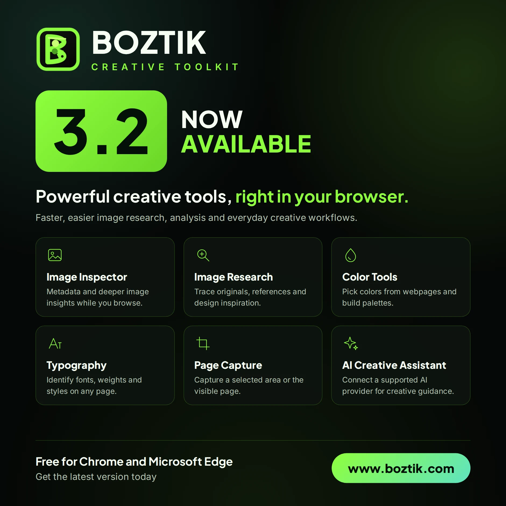

Image Inspector
Deep technical analysis, metadata, sizing, and creative editing tips for any image — processed locally in your browser.
A free browser extension that turns everyday browsing into a complete creative workflow — inspect any image, research visual references, pull colors and typography from any page, capture what you see, and get AI guidance when you want it.
No account. No subscription. Installed copies update automatically through the browser's extension store.

Each feature is designed to be useful the moment you open it — no setup, no friction.
Deep technical analysis, metadata, sizing, and creative editing tips for any image — processed locally in your browser.
Investigate any image, find visual references, and gather design inspiration without leaving your current tab.
Track down the original, higher-resolution versions and sources of the images you come across online.
Pick colors and extract clean, exportable color palettes directly from any website in your browser.
See the fonts, weights, and styles used on any webpage — the exact type details behind a design you admire.
Capture a selected area or the visible page quickly, ready to reference, annotate, or share.
Discover and download original images and creative assets directly from the pages you browse.
Optional AI guidance for Photoshop, Firefly prompts, and editing decisions — connected to your own provider account, never Boztik's servers.
Add the extension from the official Chrome Web Store or Microsoft Edge Add-ons. No account, no sign-up.
Open any image, page, or asset and choose the tool you need — inspection, research, color, typography, or capture.
Work stays in your browser. Optional AI help connects to the provider you already use, with your key, on your terms.
Image analysis runs directly in your browser. Your images are not uploaded to Boztik's servers when you use the toolkit's inspection and capture tools.
The AI Creative Assistant is optional and connects to your own OpenAI, Anthropic (Claude), or Google (Gemini) account. Requests go directly from your browser to the provider you choose — Boztik never sees your key or your conversations.
Keys are stored only in your browser and can be disconnected or removed at any time. The toolkit is free forever with no account or tracking requirement to use it.
See our Privacy Policy and Terms of Service for full details on how the toolkit and website handle data.
Yes — free forever, with no account and no subscription. Every core tool, including the AI Creative Assistant's built-in guidance, is included at no cost.
Chrome and Microsoft Edge are both supported and available in their official stores. Broader Chromium-browser support, including Brave, Opera, and Vivaldi, is planned for a future release.
Image inspection and capture tools process images locally in your browser and do not upload them to Boztik's servers. Any AI-assisted features you enable use the provider account you connect yourself.
It's optional. You connect your own OpenAI, Anthropic (Claude), or Google (Gemini) API key, and the assistant calls that provider directly from your browser. Boztik never sees your key or your conversations. Without a key, the assistant still works using built-in quick-reference guidance.
Installed copies update automatically through the Chrome Web Store and Microsoft Edge Add-ons, so you always get the latest tools and fixes without any manual steps.
No account is needed to install or use the toolkit. Most tools run locally; the optional AI assistant requires an internet connection and your own provider key.
Free forever, works in minutes, and designed to make your next project easier.